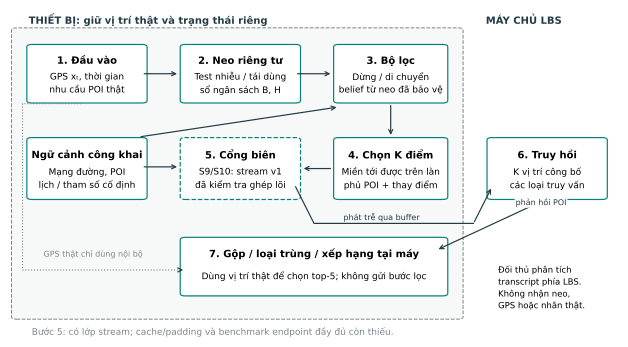
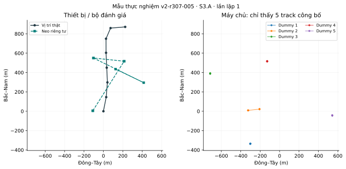
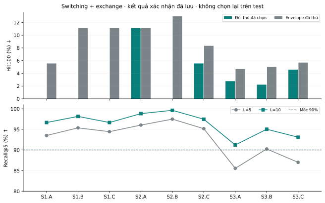
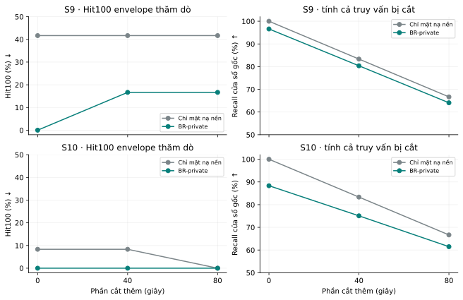
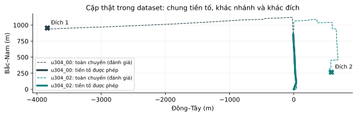

Bảo vệ riêng tư quỹ đạo
Dữ liệu kịch bản, đối chứng và bộ đo đánh giá
Bản 26/09/2026 · Nguồn rà soát đến 21/09/2026
PDF · LaTeX · 30 mẫu dữ liệu · Nguồn
1. Khung cập nhật và dữ liệu nền
Bản chuẩn bị ngày 26/09/2026 — cập nhật theo ghi chú 19/09. Phạm vi bảo vệ vẫn gồm S1–S10; thứ tự triển khai thay đổi. Ưu tiên chốt dữ liệu, quyền quan sát và giao thức đánh giá trước khi tối ưu phương pháp. Tài liệu được rà soát đến 21/09/2026; các thiết lập mới dưới đây là đề xuất cho vòng tiếp theo, chưa phải kết quả thực nghiệm.
| Nội dung cần cập nhật | Cách xử lý trong bản này |
|---|---|
| Thứ tự phát triển | Giai đoạn I: S1, S2, S3, S9, S10 → II: S5, S6, S8 → III: S4, S7. |
| A/B/C và mẫu dữ liệu | Giải thích đủ 30 ca; mỗi ca có số mẫu và ID nguồn. Ví dụ tọa độ, nhãn và cửa sổ được trích từ dataset. |
| Related works và metrics | 10 công trình trong cửa sổ ba năm; bảng metrics cho toàn bộ 13 nguồn được đưa vào, gồm 3 ngoại lệ đối chứng. |
| Sáu đối chứng | DLS, RDG, TransProtect, semantic correlation, fake-query insertion và AnotherMe. |
| Điểm tổng hợp | Ba trục P–U–F, chuẩn hóa cố định, trung bình nhân có trọng số; báo thêm từng thành phần và kiểm tra độ nhạy. |
Ba cấp dữ liệu: nhóm tuyến → chuyến → bản ghi
12 nhóm tuyến là 12 cấu hình tuyến có quan hệ trên cùng một mạng đường. Mỗi nhóm có tuyến gốc và các biến thể: chung đoạn đầu rồi rẽ khác, nhập tuyến từ nơi khác, dừng, quay lại, đi cùng hoặc lặp chuyến. Chúng không phải 12 loại tấn công và cũng không đơn giản là 12 tuyến độc lập.
Mỗi nhóm có 22 phiên/chuyến hoàn tất, tổng cộng 264. Một nhóm trải trên chín ngày mô phỏng để tạo các quan hệ cần kiểm tra. 393 bản ghi là các phép thử được rút từ những chuyến ấy: chọn cửa sổ quan sát, một hoặc nhiều chuyến, thông tin phụ trợ và đáp án. Có 172.443 điểm FCD và đủ 30 ca A/B/C.
Một chuyến có thể phục vụ nhiều phép thử; một phép thử cũng có thể cần nhiều chuyến. 393 bản ghi không phải 393 chuyến độc lập.
Ví dụ: chuyến u301_00 cung cấp một điểm cho S1.A, một đoạn cho S3.A và phần sau khi che đầu chuyến cho S9.A. S4.B lại cần ghép u301_00 với u301_10 để kiểm tra liên kết người khi đổi thiết bị. Có thể tạo thêm bản ghi bằng đặc tả mới, nhưng lấy nhiều cửa sổ từ cùng chuyến không tự tạo thêm bằng chứng độc lập.
Quyền nhìn thấy dữ liệu
| Phía giữ dữ liệu | Nội dung được sử dụng |
|---|---|
| Thiết bị / bộ đánh giá | Tọa độ thật, FCD, nhãn người–xe–thiết bị, đáp án tương lai; dùng để sinh bảo vệ hoặc chấm theo đúng vai trò. |
| Đối thủ | Chỉ transcript đã bảo vệ và thông tin phụ trợ được cho phép. Không nhận record_id, nhãn thật, kế hoạch tuyến hoặc toàn bộ dataset. |
Các mẫu trong báo cáo là dữ liệu của thiết bị/bộ đánh giá, chưa phải đầu ra bảo vệ. Đồng hồ được chuẩn hóa theo cửa sổ; S8 dùng mốc chung cho cặp xe. Đầy đủ 30 mẫu và dấu vết nguồn nằm trong data_samples.json; số lượng tra trong scenario_inventory.csv.
2. Kịch bản và ba ca A/B/C
A/B/C thay đổi điều kiện của cùng một nhiệm vụ suy luận, không phải ba mức độ khó tăng dần. Số sau dấu “/” là số bản ghi hiện có. Mã mẫu giúp truy ngược đến đúng cửa sổ và nhãn; ví dụ đời thường chỉ minh họa ý nghĩa, không phải sự kiện có thật trong dữ liệu mô phỏng.
S1 — suy ra vị trí tại một lần gửi
| Ca / n | Điều kiện và điều cần phân biệt | Mẫu thật |
|---|---|---|
| S1.A / 12 | Một bản tin tại cạnh có ≥2 hướng đi tiếp hợp lệ: kiểm tra khi mạng đường còn nhiều khả năng. | v2-r301-000 |
| S1.B / 12 | Một bản tin tại cạnh chỉ có 1 hướng đi tiếp: bản đồ tự loại bớt khả năng. | v2-r301-001 |
| S1.C / 12 | Cách POI ≤150 m; loại POI chiếm ≤5% danh mục công khai. Hiếm theo loại địa điểm, không phải theo tần suất ghé thăm. | v2-r301-029 |
Ví dụ. Bạn tìm quán cà phê khi đang gần trường. A: đang ở đường có nhiều nhánh; B: đang trong đường một lối; C: đang gần một loại địa điểm hiếm trong khu vực. Cả ba đều hỏi “bạn đang ở đâu?”, nhưng bằng chứng bản đồ khác nhau.
S2 — suy ra nơi dừng qua nhiều lần gửi
| Ca / n | Điều kiện và điều cần phân biệt | Mẫu thật |
|---|---|---|
| S2.A / 12 | Dừng có chủ đích ≥20 giây; lấy truy vấn mỗi 5 giây. | v2-r301-002 |
| S2.B / 12 | Dừng ≥120 giây; lấy truy vấn mỗi 20 giây. | v2-r301-003 |
| S2.C / 12 | Hai lần dừng trên cùng làn, mỗi lần ≥20 giây; ở giữa thực sự di chuyển. | v2-r301-004 |
Ví dụ. Bạn chờ trước cổng trường: A chờ ngắn, B chờ lâu, C rời đi mua nước rồi quay lại. Đối thủ tận dụng tính lặp để suy ra điểm dừng. Mẫu A có 6 lần quan sát trong đoạn dừng 29 giây; mẫu B có 9 lần trong đoạn dừng 179 giây.
S3 — tái dựng đoạn đường đã đi
| Ca / n | Điều kiện và điều cần phân biệt | Mẫu thật |
|---|---|---|
| S3.A / 12 | Đoạn di chuyển ≥60 giây qua ≥3 cạnh; gửi mỗi 20 giây. | v2-r301-005 |
| S3.B / 11 | Ít nhất một nửa số cạnh được lấy mẫu chỉ có một hướng đi tiếp: hành lang ít lựa chọn. | v2-r301-007 |
| S3.C / 12 | Lấy mẫu đoạn di chuyển thưa hơn, mỗi 60 giây. | v2-r301-006 |
Ví dụ. Bạn đi từ nhà tới trường. A có chuỗi đủ dày để nối đường; B đi qua hành lang khó rẽ; C chỉ để lộ một điểm mỗi phút. Đối thủ phải tái dựng cùng loại đáp án từ mức quan sát khác nhau. Mẫu S3.A có 12 điểm; S3.C có 4 điểm của cùng đoạn u301_00.
Một tọa độ thật trong mẫu S1.A
| Phiên | Chỉ số FCD | Kinh độ; vĩ độ | Cạnh đường |
|---|---|---|---|
| u301_00 | 333 | 116.335452; 39.991622 | 162970620#0 |
Bộ đánh giá giữ điểm trên làm đáp án; cơ chế tạo transcript công bố từ đầu vào được phép. Không lấy tọa độ giả tự dựng làm “kết quả bảo vệ đã chạy”.
S9 — suy ra điểm xuất phát bị che
| Ca / n | Điều kiện và điều cần phân biệt | Mẫu thật |
|---|---|---|
| S9.A / 12 | Cạnh xuất phát chỉ một lối ra. Che 60 giây đầu, lấy phần còn lại mỗi 20 giây. | v2-r301-025 |
| S9.B / 11 | Hai chuyến khác điểm đầu nhưng nhập một đoạn chung; chỉ cấp từ chỗ nhập tuyến. | v2-r301-026 |
| S9.C / 12 | Nhiều chuyến có cùng điểm xuất phát dự kiến; che 60 giây đầu từng chuyến. | v2-r301-027 |
Ví dụ. Ứng dụng không hiện đoạn bạn rời nhà. A: chỉ có một lối ra khu dân cư; B: hai khu nhà có đường nhập chung; C: qua nhiều thứ Bảy, đoạn công bố luôn bắt đầu gần cùng một vùng. Đối thủ suy ngược nơi xuất phát từ những phần còn nhìn thấy.
S10 — suy ra điểm kết thúc bị che
| Ca / n | Điều kiện và điều cần phân biệt | Mẫu thật |
|---|---|---|
| S10.A / 11 | Cạnh kết thúc chỉ một lối vào. Che 60 giây cuối của chuyến đã hoàn tất. | v2-r302-025 |
| S10.B / 4 | Hai chuyến chung tiền tố nhưng tới hai đích khác nhau; giữ đoạn cuối làm đáp án ngoại tuyến. | v2-r304-015 |
| S10.C / 12 | Nhiều chuyến cùng điểm kết thúc dự kiến; che 60 giây cuối từng chuyến. | v2-r301-028 |
Ví dụ. Bạn đã đến trường nhưng ứng dụng giấu đoạn vào cổng. A có một cổng vào; B đoạn nhìn thấy có thể dẫn đến trường hoặc bệnh viện; C nhiều chuyến đều biến mất gần cùng một nơi. S10 hỏi nơi đã kết thúc; S6 hỏi nơi sẽ tới khi chuyến vẫn đang diễn ra.
S9/S10 chấm điểm FCD đầu/cuối, chưa khẳng định đó là “nhà” hay “nơi làm việc”. Che 60 giây cũng khác che một vùng tròn trên bản đồ.
Mẫu dữ liệu: S9.A
Bản ghi v2-r301-025, phiên u301_00: đáp án là FCD[0]; cửa sổ được phép chứa 27 điểm, từ FCD[60] đến FCD[580]. Bộ phát lại đặt lần gửi đầu về thời gian tương đối 0; không tự tiết lộ thời điểm khởi hành gốc hoặc toàn bộ thời lượng chuyến.
| Vai trò điểm | Chỉ số | Kinh độ; vĩ độ |
|---|---|---|
| Đáp án bị che | 0 | 116.324044; 39.986765 |
| Đầu cửa sổ được phép | 60 | 116.327030; 39.985143 |
| Cuối cửa sổ được phép | 580 | 116.346230; 39.996695 |
Dịch vụ bị bỏ lỡ trong khoảng không gửi phải được ghi nhận khi đánh giá chính sách che đầu/cuối. Không chỉ chấm các truy vấn sống sót rồi kết luận utility không bị ảnh hưởng.
S5 — dự đoán cạnh đường kế tiếp
| Ca / n | Điều kiện và điều cần phân biệt | Mẫu thật |
|---|---|---|
| S5.A / 12 | Chỉ tiền tố trước một lượt rẽ có ≥2 lựa chọn; nhãn là cạnh kế tiếp thực sự đi vào. | v2-r301-011 |
| S5.B / 12 | Lượt chuyển chỉ có 1 lựa chọn; kiểm tra mức suy luận vốn đã có từ bản đồ. | v2-r301-012 |
| S5.C / 4 | Hai chuyến chung tiền tố tuyến kế hoạch nhưng đi vào hai cạnh khác nhau. Tốc độ và thời điểm không bắt buộc giống hệt. | v2-r304-013 |
Ví dụ. Bạn đang tới ngã rẽ gần trường. A có thể rẽ vào trường hoặc đi thẳng; B là đường chỉ đi tiếp một hướng; C hai chuyến đều đi tới ngã rẽ đó nhưng sau đó rẽ khác nhau. Không cần biết tên bạn để đoán bước tiếp theo; độ tin cậy phải được kiểm chứng, không chỉ nhìn đường rồi phỏng đoán.
S6 — dự đoán đích chưa tới
| Ca / n | Điều kiện và điều cần phân biệt | Mẫu thật |
|---|---|---|
| S6.A / 4 | Hai chuyến chung tiền tố nhưng có đích khác nhau; phần sau không được cấp. | v2-r304-014 |
| S6.B / 5 | Hai đích cách nhau ≤500 m: phân biệt đúng đích có thể khó dù sai số tọa độ nhỏ. | v2-r304-034 |
| S6.C / 10 | Sáu chuyến lịch sử: 5 tới đích thường, 1 tới đích hiếm; chỉ tiền tố của chuyến hiện tại. Lịch sử phải được bảo vệ trước khi cấp. | v2-r302-030 |
Ví dụ. Bạn thường tới trường lúc 15h thứ Bảy nhưng hôm nay có thể tới bệnh viện. A: đoạn đang đi chưa phân biệt được hai nơi; B: trường và quán cà phê rất gần nhau; C: đối thủ có lịch sử liên quan để tăng xác suất dự đoán. Lịch 15h thứ Bảy chỉ là minh họa; dataset dùng lịch tổng hợp nhiều ngày, không chứa lịch cá nhân này.
Cùng dữ liệu hình học, ba câu hỏi khác nhau
| Mẫu / phần được phép | Đáp án giữ kín | Ý nghĩa |
|---|---|---|
| S5.C: v2-r304-013; u304_00 và u304_02; chỉ số [0,20,40,60,80,100,119] ở mỗi phiên. | Cạnh 1104429375 và 120491943, tại FCD[122]. | Hai nhánh tiếp theo khác nhau. |
| S6.A: v2-r304-014; cùng cặp và tiền tố. | FCD cuối [693,483]; hai đích cách ≈4.474,4 m. | Dự đoán đích khi còn đang đi. |
| S10.B: v2-r304-015; cùng cặp và tiền tố. | Cùng hai điểm cuối, chuyến đã hoàn tất. | Suy ngược phần kết thúc bị giấu. |
S6.B có một mẫu với hai đích chỉ cách 46,2 m. Vì vậy Hit100 có thể coi cả hai dự đoán là gần đúng trong khi nhãn đích khác nhau: cần báo cả sai số tọa độ và độ đúng đích.
S5/S6 phải có đối thủ chỉ dùng bản đồ hoặc tần suất nền. Báo cả khả năng đoán đúng tuyệt đối và phần tăng thêm do transcript công bố.
Mẫu S6.C v2-r302-030 gồm u302_14…u302_20: sáu phiên lịch sử và tiền tố 7 điểm của phiên cuối. Nhãn destination_class=routine và target_index=659 nằm ở bộ đánh giá. Không cấp nhãn này hoặc FCD tương lai cho cơ chế trực tuyến/đối thủ.
S8 — định vị khi có dữ liệu người đi cùng
| Ca / n | Điều kiện và điều cần phân biệt | Mẫu thật |
|---|---|---|
| S8.A / 12 | Đi cùng một phần rồi tách; ở gần ≤100 m trong ≥10 giây liên tục. | v2-r301-022 |
| S8.B / 9 | Chung tuyến; ≥80% thời điểm đồng xuất hiện cách ≤100 m, có ≥10 giây liên tục ở gần. | v2-r301-023 |
| S8.C / 12 | Không gán quan hệ đồng hành nhưng tình cờ ở gần; đối chứng âm. | v2-r301-024 |
Ví dụ. Bạn và bạn học cùng đi gặp giảng viên. Dù vị trí của bạn được làm mờ, vị trí của người kia có thể giúp định vị bạn. A người kia rẽ trước trường; B đi cùng gần suốt đường; C chỉ là xe lạ chạy gần. Mẫu S8.A có 325/466 thời điểm đồng bộ ở trong 100 m; S8.C vẫn có 309/460. Gần nhau chưa đủ để kết luận quan hệ xã hội.
S8 chấm cùng mục tiêu trong hai chế độ: không có và có dữ liệu đồng hành. Quy định rõ đó là dữ liệu công bố đã bảo vệ hay dữ liệu thật bị lộ. Dùng một mốc thời gian chung; không đưa hai phiên về 0 riêng rẽ làm mất độ lệch khởi hành.
S4 — liên kết danh tính giữa các phiên
| Ca / n | Điều kiện và điều cần phân biệt | Mẫu thật |
|---|---|---|
| S4.A / 12 | Hai phiên không chồng lấn, cùng người và cùng thiết bị. | v2-r301-008 |
| S4.B / 12 | Cùng người nhưng đổi thiết bị: liên kết người đúng, liên kết thiết bị sai. | v2-r301-009 |
| S4.C / 12 | Khác người nhưng dùng chung thiết bị: liên kết người sai, liên kết thiết bị đúng. | v2-r301-010 |
Ví dụ. Lịch tới trường lúc 15h thứ Bảy có thể giúp nối các phiên của bạn dù đổi điện thoại. Nhưng người khác mượn điện thoại hoặc xe của bạn không phải chính bạn. Cần chấm riêng người, phương tiện và thiết bị; nối hai phiên cùng người chưa đồng nghĩa biết tên thật.
Trạng thái nhãn. Bản ghi hiện có same_person và same_device; physical_vehicle_id nằm ở bảng phiên. Chưa có trường same_vehicle trong bản ghi và chưa có thiết kế cân bằng đầy đủ các tổ hợp người–xe–máy. Vòng mới cần suy nhãn xe từ thực thể gốc, thêm cặp âm/dương phù hợp và kiểm tra không chồng lấn trước khi báo metric xe.
S7 — suy ra nội dung hoặc ý định truy vấn
| Ca / n | Điều kiện và điều cần phân biệt | Mẫu thật |
|---|---|---|
| S7.A / 36 | Gửi nguyên văn; nhãn tổng hợp gồm khám bệnh, mua sắm, đi đường dài. | v2-r301-013 |
| S7.B / 36 | Trộn truy vấn thật trong bó cố định 6 loại; chính sách tham chiếu, chưa phải đầu ra BR-Dummy. | v2-r301-016 |
| S7.C / 36 | Cùng truy vấn đầu nhưng chuỗi sau khác nhau; kiểm tra suy luận từ chuỗi. | v2-r301-019 |
Ví dụ. Một lần tìm nhà thuốc chưa chắc là đi khám; chuỗi nhà thuốc → phòng khám → bệnh viện cung cấp dấu hiệu rõ hơn. S7.C v2-r301-019 chứa đúng chuỗi này, nhãn medical_visit. Các ý định là mẫu viết tay để kiểm thử, chưa đại diện hành vi con người.
Đủ 30 ca không có nghĩa đủ benchmark. Ca ít mẫu cần mở rộng theo đặc tả đã khóa; S4 cần nhãn xe, S7 cần dữ liệu nội dung phong phú hơn.
3. Related works gần đây: cơ chế và phạm vi
Khảo sát tập trung vào công trình công bố trong 21/09/2023–21/09/2026, liên quan tới công bố vị trí/quỹ đạo, nội dung, liên kết hoặc đánh giá bảo vệ. Đây là cập nhật có chọn lọc, chưa phải tổng quan hệ thống bao quát mọi paper. Mỗi nguồn được đưa vào đều có một dòng metrics ở mục sau. Liên hệ với S1–S10 là phân tích của nghiên cứu này, không phải các paper đã đánh giá đúng bộ ca A/B/C của ta.
| Nguồn | Cách tiếp cận trong 1–2 dòng | Liên hệ và giới hạn |
|---|---|---|
| TransProtect (2024) [R1] | Học ngữ cảnh không gian–thời gian để tạo ứng viên; phối hợp cơ chế nhiễu/tối ưu để công bố vị trí thay thế. | Gần S1–S3; đầu ra không phải tập thật + dummy. |
| Semantic correlation (2026) [R2] | Dự báo ngữ nghĩa bằng LSTM/attention, chọn dummy phù hợp chuyển tiếp đường. | S1–S3; giống ngữ nghĩa không tự bảo vệ ý định S7. |
| Fake queries (2026) [R3] | Chèn truy vấn toàn giả giữa các lần truy vấn để gây khó nối đường qua thời gian. | S2–S3; cần tính toàn bộ bản tin chèn. |
| Road-aware PTPPM (2025) [R4] | Cá nhân hóa nhiễu theo nhạy cảm và tương quan, dùng mạng đường để ràng buộc đầu ra. | S1–S3 và phụ thuộc thời gian; preprint, không chứng minh đã giải S5/S6 của ta. |
| CPCROK (2025) [R5] | Dùng dự báo Kalman/RNN và thông điệp giả hỗ trợ đổi bí danh xe trong mạng thưa. | Liên kết xe S4; bối cảnh beacon VANET khác truy vấn POI. |
| DP-FETC (2025) [R6] | Sinh quỹ đạo từ đặc trưng thống kê; xử lý điểm đầu/cuối cho quỹ đạo tương quan cao. | Gần tương quan S8 và đầu/cuối S9/S10; xuất bản ngoại tuyến. |
| Improved PIR (2025) [R7] | Kết hợp truy hồi riêng tư theo từ khóa, BFV và tổ chức chỉ mục không gian. | Vị trí + nội dung S7; giao diện mã hóa khác dummy; mới xác minh tóm tắt. |
| SoK (2024) [R8] | Hệ thống hóa cách kiểm tra tính hữu dụng, bảo vệ và khả năng triển khai của quỹ đạo sinh. | Cơ sở thiết kế phép đo và đối thủ; không phải đối chứng thứ bảy. |
| PRISM (2025) [R9] | Dự báo LSTM kết hợp ánh xạ ngữ nghĩa phân cấp để bảo vệ chủ động. | Gợi ý xử lý ngữ cảnh/tương lai; chưa xác minh tác vụ dự đoán đích theo S6. |
| Options to Action (2026) [R10] | Nghiên cứu việc sử dụng các tính năng riêng tư trên ứng dụng thể thao. | Liên quan che đầu/cuối; tỷ lệ bật tính năng không phải tỷ lệ chống tấn công. |
Đối chứng lịch sử được tách riêng. DLS [B1] và RDG [B2] giữ vai trò mốc nền. AnotherMe [B3] thuộc số tạp chí 2024 nhưng công bố trực tuyến 11/09/2023, sớm hơn cửa sổ 10 ngày; giữ như ngoại lệ theo yêu cầu đối chứng. Không dùng ba ngoại lệ này để chứng minh khảo sát đã cập nhật gần đây.
Khoảng trống còn lại. Không ép quan hệ “một scenario = một paper giải quyết trọn vẹn”. Riêng S5/S6 cần kiểm chứng đầu suy luận tương lai đúng cửa sổ; tài liệu dùng dự báo bên trong cơ chế bảo vệ chưa đủ làm bằng chứng chống suy đoán đích. S8/S9/S10 cũng phải phân biệt xuất bản ngoại tuyến với dịch vụ trực tuyến.
4. Sáu phương pháp đối chứng và điều kiện so sánh
| Phương pháp | Backbone và đầu vào/đầu ra | Vai trò trong benchmark |
|---|---|---|
| DLS [B1] | Thống kê xác suất truy vấn/entropy; nhận vị trí hiện tại và phân bố nền, công bố tập vị trí thật + dummy. | Mốc dummy thống kê; dùng nguyên lý chọn của paper, bổ sung wrapper trạng thái nếu cần và ghi rõ. |
| RDG [B2] | Thống kê chuyển tiếp, tối ưu lựa chọn dummy qua chuỗi; đầu ra các tập ứng viên theo thời gian. | Mốc có xét liên kết thời gian; Viterbi thuộc phía tấn công/đánh giá. |
| TransProtect [R1] | Mô hình học sâu tạo ứng viên theo ngữ cảnh, kết hợp nhiễu/tối ưu; công bố một vị trí thay thế. | Đối chứng khác loại đầu ra; không cho đối thủ “chọn phần tử thật” trong một tập không chứa nó. |
| Semantic correlation [R2] | LSTM/attention + lọc theo đường/ngữ nghĩa; công bố thật cùng K−1 dummy. | Kiểm tra ích lợi của ràng buộc ngữ nghĩa so với thống kê. |
| Fake-query insertion [R3] | Quy tắc tạo/chèn truy vấn toàn giả dựa trên tính nối tiếp; transcript có thêm thời điểm/bản tin. | Giữ đúng lịch chèn; không cho đối thủ biết nhãn thật/giả nội bộ. |
| AnotherMe [B3] | Hệ thống sinh quỹ đạo ảo trực tuyến, ánh xạ POI và lập tuyến; phục vụ qua vị trí/quỹ đạo thay thế. | Đối chứng thứ sáu. Tái lập nhánh trực tuyến hoặc gắn nhãn adapter ngoại tuyến hiện có. |
AnotherMe: sửa đúng vai trò và trạng thái
Paper gốc mô tả hệ thống online; không nên gọi bản thân AnotherMe là phương pháp ngoại tuyến. Tuy nhiên adapter đang có trong repo xử lý cả đoạn/chuyến và đã được tách khỏi nhánh trực tuyến. Việc thêm tên vào bảng chưa có nghĩa đã hoàn tất một phép so sánh nhân quả với năm phương pháp còn lại. Mã tác giả: https://github.com/fang-zhiyou/AnotherMe.
Cần đóng gói giao diện theo tiền tố, kiểm tra đầu ra trước thời điểm t không đổi khi sửa phần tương lai, và xác định các ca áp dụng. Nếu chỉ chạy được adapter cả đoạn, báo riêng kết quả tham chiếu ngoại tuyến; không xếp chung điểm tổng với cơ chế chỉ thấy tiền tố. Khả năng áp dụng của phương pháp gốc không suy từ việc adapter hiện tại không hỗ trợ một ca.
Sáu điều phải đồng nhất trước khi so điểm
- Đáp án: cùng vị trí/đoạn đường/nhãn cần suy ra; không đổi tác vụ giữa các phương pháp.
- Đầu vào và thời gian: cùng tiền tố, lịch sử, phụ trợ; không dùng tương lai trong nhánh trực tuyến.
- Đầu ra và đối thủ: đối thủ được thiết kế theo transcript thật sự công bố, nhưng chấm cùng mục tiêu.
- Dịch vụ: cùng tập POI, yêu cầu top-5, lọc trên thiết bị; ghi độ sâu phản hồi L và tất cả truy vấn phát sinh.
- Nguồn lực: cùng phần cứng, ranh giới đo và ngân sách; không đồng nhất K dummy, K ứng viên nội bộ và k=5 POI.
- Mức tái lập: phân biệt mã gốc, tái hiện và adaptation; báo lỗi/không áp dụng, không bỏ khỏi mẫu số để tăng điểm.
Sáu đối chứng là danh sách nghiên cứu, chưa mặc định cả sáu đều bảo vệ nội dung S7 hoặc danh tính S4. Nhánh không đổi nội dung có thể được đo như đối chứng lộ nội dung, nhưng phải trình bày đúng khả năng của nó.
5. Bảng metrics gốc của toàn bộ nguồn được chọn
Mũi tên mô tả hướng mong muốn theo nghĩa metric gốc. “CX” = chưa xác minh đủ trong nguồn đã truy cập, không có nghĩa paper chắc chắn không đo. Một số nguồn có vai trò khảo sát/hành vi nên không có ba cột tương đương thuật toán. Không lấy số đo trên dataset khác nhau để xếp hạng trực tiếp.
| Nguồn | Privacy / chẩn đoán | Utility | Performance / phạm vi đã kiểm tra |
|---|---|---|---|
| R1: TransProtect | EIE ↑: sai số suy luận kỳ vọng dưới đối thủ, đơn vị khoảng cách. | Sai lệch chi phí hành trình Δc ↓, so cùng đích. | CX đối với đầy đủ byte + độ trễ đầu-cuối; §5.1.4 và Eq. 13. |
| R2: Semantic | ASR ↑ theo điều kiện ẩn danh; DER ↑ đánh giá dummy/ngữ nghĩa. | DER không phải chất lượng top-5 POI. | Thời gian sinh ↓. Xem §6.3–6.5; cần khóa cách tính DER khi tái lập. |
| R3: Fake queries | Số đường khó phân biệt ↑; ASR ↑ dưới các phép loại ứng viên. | CX về chất lượng POI. | Độ trễ/tạo truy vấn và RSS ↓; §6.3–6.6. |
| R4: PTPPM | Sai số kỳ vọng của đối thủ ↑; xác suất tấn công thành công ↓. | Khoảng dịch chuyển kỳ vọng giữa thật và đầu ra ↓. | CX chi phí dịch vụ đầu-cuối; §VI, Eq. 26–27. |
| R5: CPCROK | Tỷ lệ khớp quỹ đạo của đối thủ ρ ↓. | Không cùng tác vụ top-5 POI. | Số quỹ đạo giả tối thiểu ψ ↓; §5.4. Đây là proxy chi phí, không phải byte. |
| R6: DP-FETC | MI ↓ giữa quỹ đạo gốc và sinh; paper trình bày bảo đảm ε-DP. | JSD ↓ cho phân bố vị trí, thời lượng và quãng đường. | Phân tích độ phức tạp; chưa có phép đo LBS đầu-cuối tương đương. |
| R7: Improved PIR | Phân tích an toàn; metric tấn công thực nghiệm CX. | CX metric truy hồi cụ thể. | Tóm tắt nêu tổng chi phí tính toán; đơn vị/mẫu số CX. |
| R8: SoK | Khuyến nghị kiểm tra bằng tấn công tái dựng/liên kết, bên cạnh bảo đảm hình thức. | Phân biệt metric phân bố, hình học và tác vụ downstream. | Khả năng triển khai/tính toán trong khung khảo sát; không có “điểm model SoK”. |
| R9: PRISM | Location Privacy Index (LPI); công thức CX. | Total Distance Difference; Directional Consistency; định nghĩa CX. | Privacy processing time, thời gian phản hồi; thông tin công khai, chưa tái lập. |
| R10: Adoption | Tỷ lệ dùng tính năng bảo vệ; không đo attacker success. | Nghiên cứu nhận thức/trở ngại sử dụng, không có Recall POI. | Không có chi phí thuật toán so sánh trực tiếp. |
| B1: DLS | Entropy phân bố ứng viên ↑. | CX trong hồ sơ đã kiểm tra. | CX trong hồ sơ đã kiểm tra. |
| B2: RDG | Entropy/chuyển tiếp ↑ và tỷ lệ bảo vệ dưới Viterbi ↑. | CX trong hồ sơ đã kiểm tra. | CX trong hồ sơ đã kiểm tra. |
| B3: AnotherMe | Nhận dạng quỹ đạo thật/ảo; gần mức ngẫu nhiên là mục tiêu khi tập cân bằng. | CX định nghĩa metric dịch vụ chi tiết. | Tóm tắt nêu độ trễ đáp ứng và pin; chưa xác minh đơn vị/mẫu số đầy đủ. |
Ba điểm dễ đọc nhầm
ASR không thống nhất giữa paper. Ở R2, thành công là đạt điều kiện không nhận diện vị trí thật với xác suất cao hơn 1/K. R3 kiểm tra ẩn danh trước các cách khai thác khác. Không đổi tên ASR thành Hit100 hoặc dùng ASR làm “tỷ lệ tấn công thành công” mà không nêu tử số.
Riêng DER ở R2 có hai cách diễn đạt: trung bình độ tương đồng và tỷ lệ dummy đạt điều kiện. Cần xác định cách thực thi trước khi tái lập, không coi hai cách là tự động tương đương. [R2]
Dummy trông thật chưa đủ. Nhận dạng thật/ảo của AnotherMe kiểm tra tính khó phân biệt; vẫn cần đo khả năng suy ngược vị trí thật. Tương tự, MI thấp hoặc entropy cao không tự xác nhận đối thủ cụ thể thất bại. [B3, R6, R8]
Chất lượng thống kê khác chất lượng dịch vụ. JSD bảo toàn phân bố; Δc kiểm tra chi phí đến cùng đích; Recall@5 kiểm tra đúng tập POI người dùng cần. Chúng trả lời ba câu hỏi khác nhau. [R1, R6, R8]
6. Từ hạn chế metrics gốc đến bộ đo chung
| Hạn chế khi dùng trực tiếp | Quyết định cho benchmark | Lập luận |
|---|---|---|
| Entropy/DER/nhận dạng ảo phụ thuộc biểu diễn nội bộ. | Lấy kết quả tấn công trên đáp án thật làm privacy chính. | Một vị trí thay thế và một tập dummy đều có thể bị suy vị trí; không cần cùng cấu trúc ứng viên. |
| MAE đơn lẻ có thể bị vài sai số lớn chi phối. | MAE + median + p90; Hit50/100/200. | Vừa thấy độ lớn sai số, phân bố, vừa thấy tỷ lệ vẫn đoán rất gần. |
| Metric vị trí không chấm được người/đích/ý định. | Giữ đầu đo riêng cho từng loại đáp án. | Không ép F1, mét và entropy thành cùng một đại lượng riêng tư tự nhiên. |
| Giữ phân bố hoặc điểm thay thế gần thật chưa chứng minh POI đúng. | Recall@5, tỷ lệ trả đủ, ΔD theo mạng đường. | Chấm tác vụ dịch vụ thực sự cung cấp; không chỉ chấm hình học đầu ra. |
| Số dummy hoặc thời gian sinh chưa đủ chi phí. | Byte/truy vấn thật; latency p50/p95; số bản tin phụ. | Tính cả phản hồi, truy vấn chèn và bước gộp/lọc trên thiết bị. |
| Một điểm tổng có thể che ca yếu. | Điểm tổng theo phạm vi khóa trước + bảng từng ca + ràng buộc tối thiểu. | Giữ cách lựa chọn gọn mà vẫn truy nguyên được đánh đổi. |
“Bộ đo đề xuất” ở đây là sự lựa chọn và cách vận hành hóa cho bài toán, không tuyên bố phát minh MAE, F1, Recall hoặc trung bình nhân. Đóng góp cần chứng minh là giao thức phù hợp với threat model và phát hiện được đánh đổi mà một metric đơn lẻ bỏ qua.
Privacy cho tọa độ: đo đối thủ, không đo khoảng cách nhiễu
x là vị trí thật; x̂ là ước lượng của đối thủ từ dữ liệu được phép. dE tính bằng mét sau đổi hệ tọa độ phù hợp, không lấy khoảng cách Euclid trực tiếp trên kinh/vĩ độ. MAE/median/p90 càng lớn thường càng khó định vị; Hit càng thấp càng tốt về riêng tư. Nhưng p90 cao chỉ cho biết đuôi sai số lớn, không chứng minh đa số người được bảo vệ tốt.
Quy ước phân vị: nearest rank, sắp e tăng dần rồi lấy e tại vị trí ceil(q·n), tính từ 1. Với [20,50,80,150,700] m: median=80 m, p80=150 m, p90=700 m. Quy ước cố định tránh kết quả khác nhau do phần mềm nội suy.
Privacy cho các kịch bản còn lại
| Phạm vi | Chỉ số chính / bổ sung |
|---|---|
| S1–S3, S9–S10 | Hit100 ↓; MAE/median/p90 ↑ và Hit50/200 ↓. S2 chấm điểm dừng; S3 chấm các thời điểm mục tiêu; S9/S10 chấm đầu/cuối. |
| S4 | Balanced accuracy ↓, precision/recall/F1 liên kết ↓; chấm người, xe, máy riêng. Mỗi đầu cần cả cặp dương và âm. |
| S5–S6 | Accuracy cạnh/đích ↓; macro-F1 nếu mất cân bằng. S6 báo thêm lỗi tọa độ; tập đích ứng viên cố định từ trước. |
| S7 | Macro-F1 ý định ↓; confusion matrix theo lớp. Tách nguyên văn và suy luận chuỗi. |
| S8 | Hit/MAE trong từng chế độ phụ trợ và chênh lệch bật–tắt; cùng tập mục tiêu, cùng đối thủ hợp lệ. |
Với mọi tác vụ, thêm S(chỉ phụ trợ) và ΔS = S(công bố + phụ trợ) − S(chỉ phụ trợ), trong đó S là độ thành công của đối thủ. S5.B có thể dễ đoán ngay từ bản đồ: ΔS nhỏ không đồng nghĩa mức riêng tư tuyệt đối cao.
Utility: kết quả POI còn phục vụ tốt không?
Mỗi truy vấn thật i có tập tham chiếu R* gồm tối đa 5 POI gần nhất hợp lệ của đúng loại, theo cùng oracle đường có hướng. R̂ là tối đa 5 POI sau nhận phản hồi, gộp, loại trùng và lọc trên thiết bị. L là độ sâu phản hồi của máy chủ, không phải k=5 của ứng dụng.
Ví dụ: tham chiếu {A,B,C,D,E}, kết quả {A,B,C,F,G}: Recall=3/5=0,6 nhưng C=1 vì vẫn đủ 5. Kết quả {A,B,C,D}: Recall=0,8, C=0. Chỉ có đáp án tham chiếu mới vào mẫu số; có đáp án nhưng trả rỗng nhận Recall=0, C=0. Báo số truy vấn không có đáp án, không âm thầm loại bỏ lỗi dịch vụ.
dG là đường ngắn nhất có hướng; Q ánh xạ lên mạng đường. Cả hai vế đều xuất phát từ vị trí thật, không so vị trí thật với vị trí giả. Chỉ chấm ΔD khi trả đủ số lượng và đáp án hợp lệ, báo số ca đủ điều kiện. Nếu tham chiếu thật sự là các POI gần nhất cùng tập đủ điều kiện thì ΔD ≥0; giá trị âm đáng kể cần kiểm tra oracle/tập lọc, không tự cắt về 0.
Ví dụ năm POI chuẩn có khoảng cách trung bình 600 m, năm POI sau bảo vệ là 850 m: ΔD=250 m. Khi chỉ trả bốn POI, không gán ΔD=0 để coi là tốt. Với S9/S10, lịch truy vấn thật phải được cố định trước chính sách che: truy vấn bị bỏ mà không được cache phục vụ vẫn tính là không phục vụ.
Performance: trả giá bao nhiêu để có mức bảo vệ đó?
| Đại lượng | Ranh giới phải ghi rõ |
|---|---|
| b: byte/truy vấn thật ↓ | Payload tuần tự hóa thực tế của cả yêu cầu lẫn phản hồi; gồm truy vấn chèn. Nếu chỉ tính payload, ghi rõ chưa tính TLS/TCP và không gọi là lưu lượng mạng đầy đủ. |
| Thời gian p50/p95 ↓ | Từ lúc ứng dụng có truy vấn thật đến lúc có kết quả sau lọc; bao gồm sinh bảo vệ, dịch vụ và gộp. Khi dùng oracle cục bộ, báo latency cục bộ, không suy ra trải nghiệm mạng thực. |
| Chi phí chẩn đoán | Số tọa độ/bản tin, số POI phản hồi, thời gian sinh, RAM; tách học và tiền xử lý khỏi trực tuyến. Pin chỉ báo nếu đo trên thiết bị. |
Dữ liệu byte mã POI của vòng cũ không đủ để chấm performance tổng hợp mới. Cần đo lại cùng giao diện và cùng phần cứng.
Mẫu số và độ độc lập
Chấm điểm từng mục tiêu rồi gộp theo bản ghi/chuyến, nhóm tuyến, ca A/B/C và scenario với trọng số được khóa. Giữ các phiên/cặp có quan hệ trong cùng split. Không cho S7 nhiều bản ghi hoặc chuyến dài áp đảo phần còn lại. Khoảng tin cậy lấy mẫu lại theo nhóm tuyến, không coi từng điểm FCD hoặc seed nhiễu là người độc lập.
7. Điểm tổng hợp privacy–utility–performance
Điểm tổng hợp phục vụ lựa chọn cấu hình trong cùng phiên bản benchmark và cùng phạm vi. Đây là điểm ra quyết định theo nhu cầu, không phải bảo đảm riêng tư mới hoặc xác suất an toàn. Vòng đầu chỉ xếp hạng chung S1, S2, S3, S9, S10; các giai đoạn sau mở phiên bản điểm khác.
Bước 1: đưa ba trục về cùng chiều tốt và thang 0–1
h là Hit100 của đối thủ đã chọn trên validation cho từng phương pháp/ca; đóng băng lựa chọn trước test. Báo thêm envelope của các đối thủ đã thử như phân tích độ nhạy. P cao nghĩa tỷ lệ định vị đúng trong 100 m thấp. Không dùng MAE để tự co giãn theo model tốt/xấu nhất của bảng, vì thêm một model sẽ làm điểm các model cũ đổi theo.
Trong f, g và b là mốc tốt và mốc xấu đã chốt trước, b>g. b_payload là byte/truy vấn thật, trung bình đều qua ca rồi scenario; T95 là giá trị lớn nhất trong các latency p95 từng ca. Như vậy một ca rất chậm không bị trung bình che lấp. Các mốc lấy từ yêu cầu dịch vụ/hardware hoặc pilot phát triển, không lấy từ test. Ở ví dụ dưới: byte tốt 2 kB, giới hạn 10 kB; latency tốt 50 ms, giới hạn 250 ms; 1 kB=1.000 byte. Đây chỉ là mốc minh họa.
Bước 2: kiểm tra điều kiện tối thiểu rồi xếp điểm
Đề xuất khởi đầu wP=wU=wF=1/3. Trung bình nhân khiến một trục rất yếu kéo điểm xuống; một trục bằng 0 cho Q=0. Trước khi chọn, kiểm tra Recall@5 từng ca ≥0,90 và giới hạn byte/latency đã định. Cấu hình không đạt được ghi “không khả thi”, dù vẫn có thể hiển thị điểm chẩn đoán. Còn thiếu một ca bắt buộc hoặc thiếu phép đo thì Q=NA; không tự bỏ ca rồi chia lại trọng số.
Ví dụ số — dữ liệu minh họa, không phải kết quả model
| Cấu hình | P / U | Byte; latency p95 | F | Q đều |
|---|---|---|---|---|
| A | 0.95 / 0.95 | 6,800 B; 130 ms | 0.490 | 76.2 |
| B | 0.70 / 0.95 | 3,600 B; 90 ms | 0.800 | 81.0 |
A làm đối thủ khó định vị hơn, nhưng B nhẹ hơn. Điểm tổng không nói A “thua về privacy”; nó nói B phù hợp hơn với bộ trọng số đang dùng. Utility trung bình 0,95 chưa đủ chứng minh mọi ca đạt 0,90; ví dụ giả định đã qua kiểm tra từng ca.
Trọng số thay đổi thì quyết định có đổi không?
| Ưu tiên (wP, wU, wF) | Q của A | Q của B | Thứ tự |
|---|---|---|---|
| Cân bằng (1/3, 1/3, 1/3) | 76.2 | 81.0 | B > A |
| Ưu tiên privacy (0,6; 0,2; 0,2) | 83.2 | 76.4 | A > B |
| Ưu tiên performance (0,2; 0,2; 0,6) | 63.8 | 80.6 | B > A |
Đây là đổi nhu cầu hợp lệ, không phải thay công thức sau khi thấy model nào thắng. Cần công bố hồ sơ trọng số chính trước test và giữ các hồ sơ còn lại làm phân tích độ nhạy. Thực nghiệm phải báo đủ P, U, F, Q, điều kiện khả thi và kết quả từng ca.
Mở rộng điểm sang S5/S6/S8 rồi S4/S7
Giai đoạn II bổ sung độ đúng cạnh/đích và chế độ có phụ trợ; giai đoạn III bổ sung liên kết và ý định. Khi đó có thể chọn một đại lượng thành công của đối thủ cho từng đầu để tính 1−S, nhưng không được coi 1−accuracy, 1−F1 và 1−Hit là cùng mức riêng tư tự nhiên. Số lớp, tỷ lệ cặp dương, tập ứng viên và mức đoán nền phải được cố định. Chỉ tạo Q đa nhiệm khi đã chốt trọng số tác vụ và phép chuẩn hóa tương ứng; hiện chưa có Q chung S1–S10.
S8 cần báo cả mức rủi ro tuyệt đối khi có phụ trợ và phần tăng thêm. S4 phải có ba đầu người/xe/máy; hiện còn thiếu nhãn/độ cân bằng nên chưa đủ điều kiện tạo điểm. Không gán các phần chưa đo bằng 0 hay dùng “không áp dụng” như điểm hoàn hảo.
Chấp nhận một điểm kết hợp ba trục, nhưng luôn gắn với phạm vi, trọng số và điều kiện áp dụng. Không có một con số duy nhất thay thế toàn bộ phân tích S1–S10.
Quy trình đánh giá đề xuất cho vòng tiếp theo
- Khóa phiên bản dataset, oracle POI, các cửa sổ, tập nhãn và quyền phụ trợ; ghi hash nguồn.
- Tách dữ liệu học, chọn cấu hình và xác nhận theo nhóm quan hệ. Dữ liệu từng dùng để chỉnh thiết kế không còn là kiểm thử mới.
- Học/chọn đối thủ trên phần được phép; chọn cấu hình bảo vệ và trọng số trên phát triển/validation, rồi đóng băng.
- Chạy toàn bộ cấu hình đã đăng ký, cùng seed nhiễu ghép cặp; giữ lỗi và ca thiếu, ghi nguyên nhân.
- Báo từng ca, từng nhóm, ba trục và điểm Q; khoảng tin cậy theo nhóm tuyến. Test dùng để kết luận, không để tiếp tục tối ưu.
Tổng 12 nhóm hiện tại chỉ đủ kiểm tra khả thi ban đầu. Ca S5.C/S10.B có 4 bản ghi, S6.A có 4 và S6.B có 5. Cần tăng nhóm độc lập theo điều kiện cố định, không chọn nhóm mới vì model đạt điểm tốt. Thêm cửa sổ từ cùng chuyến không khắc phục được thiếu độc lập.
8. Phương pháp BR-Dummy: kiến trúc và luồng xử lý
Ý tưởng trung tâm: vị trí thật tạo một neo riêng tư; từ lịch sử neo và ngữ cảnh công khai, thiết bị chọn một tập vị trí truy vấn vừa đi được trên đường vừa có khả năng trả đúng POI. Máy chủ chỉ thấy tập công bố. Sau khi nhận phản hồi, thiết bị dùng vị trí thật để gộp và chọn kết quả phục vụ người dùng.

| Khối | Đầu vào → đầu ra | Trạng thái |
|---|---|---|
| Neo + ngân sách | GPS hiện tại, neo trước, tham số → neo riêng tư zₜ. | Đã hiện thực; quyết định tái dùng cũng có nhiễu. |
| Belief chuyển động | Neo đã bảo vệ, thời gian, mạng đường → phân bố vị trí/chế độ. | Đã có biến thể hai trạng thái; chưa hiệu chỉnh bằng giao thông thật. |
| Chọn tập truy vấn | Belief, miền đường tới được và danh mục POI → K tọa độ. | Tham lam rồi tối đa 3 lần thay một điểm. |
| Phục vụ và lọc | Phản hồi từ K điểm → loại trùng → top-5 cho nhu cầu thật. | Đã có oracle POI cục bộ và đánh giá chất lượng. |
| Cổng bảo vệ biên | Transcript đã bảo vệ + chính sách biên → lịch công bố có kiểm soát. | Đề xuất tích hợp; mới có phép thử cắt transcript ngoại tuyến. |
Phần lõi hiện tại là cơ chế xác suất + lọc Markov ẩn + tối ưu tổ hợp; không phải mạng deep learning đầu-cuối. Ranh giới quan trọng là bộ chọn dummy không đọc GPS thật, vận tốc thật hoặc đích tương lai. Bản đồ và POI đi vào cả mô hình chuyển động lẫn mục tiêu chất lượng.
Neo riêng tư và sổ ngân sách theo phiên
Ở lần đầu, thiết bị lấy một neo ngẫu nhiên từ cơ chế mũ trên tập vị trí công khai. Ở lần tiếp theo, nó dùng kiểm tra có nhiễu để quyết định giữ neo cũ hay lấy neo mới. Việc kiểm tra phụ thuộc GPS thật nên cũng phải trả ngân sách; không được kiểm tra khoảng cách thật rồi gọi toàn bộ bước này là hậu xử lý.
Bản đang thử dùng B=0,24 m⁻¹, H=12 sự kiện, θ=200 m; chia ε_release=ε_test=B/(2H)=0,01 m⁻¹. Lần đầu ghi tối đa 0,01; 11 lần sau ghi 0,02 mỗi lần, tổng 0,23 ≤ B. Đây là sổ theo trường hợp xấu nhất, không hoàn ngân sách theo nhánh bí mật vừa xảy ra.
| Tình huống | Cách xử lý và ý nghĩa |
|---|---|
| Người dừng ở một chỗ | Tái dùng neo làm giảm việc phát nhiều vị trí nhiễu độc lập; chỉ là giảm rủi ro trong chân trời hữu hạn, không chống được mọi phép lấy trung bình. |
| Hết H=12 sự kiện | Không đọc tọa độ riêng tư mới để cập nhật neo; tiếp tục từ trạng thái đã bảo vệ. Có thể mất chất lượng nếu chuyến kéo dài. |
| Reset hoặc mở phiên khác | Phát sinh ngân sách khác; không reset miễn phí nhiều lần rồi vẫn gọi tổng chuyến là B=0,24. |
| Bảo đảm lý thuyết | Chỉ trong mô hình giả định và phạm vi composition đã phân tích. Không suy từ B ra xác suất nhận diện 1/K hoặc bảo đảm giấu nhà. |
Belief hai trạng thái: biết đang dừng hay đang đi bằng cách nào?
Bộ lọc theo dõi hai chế độ: dừng và di chuyển. Nó cập nhật từ chuỗi neo đã bảo vệ, không được nhìn vận tốc thật để chọn chế độ. Nhân dừng giữ nhiều khối xác suất tại vị trí cũ; nhân di chuyển cho khối xác suất lan ra trên mạng đường. Khoảng trống quá 120 giây dùng quy tắc hồi về prior công khai đã định.
bₜ là belief nội bộ để phục vụ chọn truy vấn, không được đồng nhất với posterior thật của mọi đối thủ. Các hệ số chuyển động hiện là heuristic cố định. Việc một metric privacy tốt hơn phải được chứng minh bằng thực nghiệm, không suy từ tên “hai trạng thái”.
Chọn K điểm theo độ phủ POI và đường có thể tới
Mỗi track dummy có một miền trạng thái tới được từ điểm công bố trước, theo thời gian trôi qua và mạng làn có hướng. Chọn trên miền này giúp chuỗi công bố có chuyển động hợp lệ. Tập trạng thái và ràng buộc giao thông là công khai; không cắt miền quanh vị trí thật bằng một bán kính bí mật.
wₜ(p) được suy từ belief vị trí và danh mục POI. Một POI đã có trong hợp không được cộng lặp khi thêm dummy khác. Cách này khuyến khích K điểm bổ sung kết quả cho nhau. Đây là mục tiêu proxy của bộ chọn; Recall thật vẫn phải đo tại GPS thật sau khi nhận và lọc phản hồi.
- Khởi tạo bằng tham lam: chọn cặp track–vị trí có ích lợi tăng thêm lớn nhất trong các lựa chọn còn hợp lệ.
- Tinh chỉnh tối đa 3 lần: thay một vị trí nếu làm mục tiêu tăng. Không tuyên bố tìm tối ưu toàn cục.
- Giữ thứ tự track và ràng buộc đường. K vị trí có thể trùng; K không tự là mức k-anonymity.
- Trong vòng hiện tại, K=5 và 6 loại POI tạo 30 truy vấn loại–tọa độ mỗi sự kiện. L=5/10 là số phản hồi mỗi truy vấn; ứng dụng cuối vẫn cần top-5.
Ví dụ đầu vào → neo → transcript thực sự đã sinh
Mẫu v2-r307-005, S3.A, nhóm family-307, lần lặp 1. Các tọa độ bên dưới được lấy từ confirmation.json, không tự dựng để minh họa.
| Phía nhìn thấy | Giá trị ở t=0, theo thứ tự (lat; lon) |
|---|---|
| Thiết bị / đánh giá: GPS thật | (39.991397; 116.330853) |
| Thiết bị / đánh giá: neo | (39.991442; 116.329572) |
| Máy chủ: 5 điểm công bố | 1: (39.988381; 116.327315); 2: (39.991595; 116.328428); 3: (39.994880; 116.322465); 4: (39.996037; 116.329352); 5: (39.991008; 116.337223) |
| Phản hồi cafe ở L=10 | 5 truy vấn; 50 mục POI phản hồi; Recall@5=1,00 sau lọc; ΔD=0 m ở riêng truy vấn này. |
Một sự kiện đúng đủ POI không chứng minh toàn bộ phương pháp đạt yêu cầu. Biểu đồ ở trang sau cho thấy cả chuỗi vị trí thật, neo và các track công bố; chỉ panel bên phải là thông tin không gian máy chủ nhận trong phép thử này.
Quan sát kiến trúc qua một chuỗi đã chạy

| Nhìn vào hình | Điều được kiểm tra |
|---|---|
| Neo có thể đứng yên qua nhiều lần | Kết quả của kiểm tra tái dùng riêng tư; không phải giữ nguyên GPS thật. |
| Dummy thay đổi ít ở mẫu này | Năm track có lần lượt 1, 2, 2, 1, 1 vị trí phân biệt. Nhiều sự kiện chồng nhau nên khó thấy đường nối; ràng buộc tới được cho phép đứng yên. |
| Dummy không cần trùng đường thật | Mục tiêu là vừa hợp lệ trên đường vừa giữ dịch vụ, không mô phỏng đúng mọi bước của người dùng. |
| Máy chủ không thấy panel trái | Không đưa neo, truth, trạng thái evaluator hoặc nhãn tuyến vào đặc trưng tấn công. |
| Hai panel khác nhau | Khoảng cách nhìn thấy không phải metric privacy: cần chạy đối thủ rồi so dự đoán với truth. |
Các kiểm tra bắt buộc trước khi mở rộng
- Thay phần tương lai mà đầu ra tiền tố không đổi: kiểm tra nhân quả, áp dụng cho cả cơ chế và bộ chọn.
- Tái tạo sổ ngân sách; khi hết H, thay GPS tương lai không được làm đầu ra mới thay đổi.
- Đối chiếu chuyển trạng thái với mạng làn có hướng, không dùng tính hợp lệ trên đồ thị nút giao thay cho luật rẽ.
- Tính lại Recall từ ID POI và oracle; tách byte mã ID, payload và lưu lượng mạng thực.
- Nguồn mã: budgeted.py → contextual_lane.py → service_cover.py / fair_cover.py → switching_cover.py.
9. Kết quả thực nghiệm: phiên bản nào đã được đánh giá?
| Vòng | Dữ liệu / cơ chế | Được kết luận đến đâu |
|---|---|---|
| paper-v2, lịch sử | 3 seed 81–83; 12 chuyến test; 5 scenario S1/S2/S3/S9/S10. BR trên đồ thị nút giao, K=3/5. | Có số đo đầu/cuối thật; chưa là bộ 30 A/B/C hiện tại, chưa là biến thể làn + bộ lọc mới. |
| fresh-switching, lịch sử mới hơn | 6 nhóm validation 301–306, 6 nhóm confirmation 307–312. 53 bản ghi confirmation S1–S3 × 3 lặp × 4 biến thể = 636 lượt. | So thành phần của BR-làn; không phải so đủ sáu paper và chưa đo bản mới trên S9/S10. |
| Boundary audit, bổ sung lần này | Tái phân tích 48 hàng nguồn S9/S10; 3 mức cắt → 144 hàng chẩn đoán. | Kết quả mới từ transcript đã lưu; thăm dò trên dữ liệu đã xem, không có test độc lập mới. |
Không ghép các bảng thành một model đã đạt S1–S10. Cần giữ phiên bản cơ chế, dataset, đối thủ và mẫu số cạnh từng kết quả.
Kết quả S1–S3 của bốn biến thể nội bộ mới nhất
| Biến thể | MAE (m) ↑ | Hit chọn ↓ | Hit envelope ↓ | Recall L=5 ↑ | Recall L=10 ↑ |
|---|---|---|---|---|---|
| Hình học | 481.8 | 5.89% | 12.34% | 84.81% | 90.11% |
| Phủ tham lam | 571.5 | 4.19% | 9.38% | 92.46% | 95.99% |
| Phủ + thay điểm | 577.4 | 3.73% | 9.59% | 92.78% | 96.33% |
| Hai trạng thái + thay điểm | 555.1 | 2.92% | 8.40% | 92.76% | 96.31% |
Trung bình đều qua chín ca, không gộp tất cả điểm thành một mẫu số. “Hit chọn” dùng đối thủ chọn trên validation; “envelope” là mức cao nhất trong bộ đối thủ đã thử trên confirmation, để chẩn đoán. Đối thủ tối thiểu MAE có thể khác đối thủ tối đa Hit.
Thêm bộ lọc hai trạng thái vào bộ phủ + thay điểm: Hit chọn giảm 3,73% → 2,92%, nhưng MAE giảm 577,4 → 555,1 m. Nghĩa là ít lần bị định vị trong 100 m hơn, song sai số trung bình của đối thủ cũng nhỏ hơn. Không có cải thiện đồng thời trên mọi metric privacy. Recall gần như giữ nguyên.
Tăng L từ 5 lên 10 nâng Recall của biến thể mới từ 92,76% lên 96,31%, đồng thời byte danh sách ID tăng khoảng 2.735 → 4.504 mỗi sự kiện. Đây là thêm tài nguyên phản hồi, không phải hiệu quả miễn phí của thuật toán.
Kết quả theo từng ca A/B/C: biến thể hai trạng thái
| Ca | Nhóm | MAE m ↑ | Hit chọn ↓ | Hit env. ↓ | Recall L5 ↑ | Recall L10 ↑ |
|---|---|---|---|---|---|---|
| S1.A | 6 | 575.9 | 0.00% | 5.56% | 93.52% | 96.67% |
| S1.B | 6 | 433.0 | 0.00% | 11.11% | 95.37% | 98.15% |
| S1.C | 6 | 638.9 | 0.00% | 11.11% | 94.44% | 96.67% |
| S2.A | 6 | 450.8 | 11.11% | 11.11% | 96.05% | 98.83% |
| S2.B | 6 | 404.1 | 0.00% | 12.96% | 97.49% | 99.63% |
| S2.C | 6 | 488.7 | 5.56% | 8.33% | 95.17% | 97.47% |
| S3.A | 6 | 691.1 | 2.78% | 4.68% | 85.56% | 91.22% |
| S3.B | 5 | 568.7 | 2.22% | 5.00% | 90.25% | 95.04% |
| S3.C | 6 | 744.9 | 4.58% | 5.69% | 87.01% | 93.10% |

Ca khó về dịch vụ là chuyển động và gửi thưa: S3.A/S3.C ở L=5 chỉ đạt 85,56%/87,01%. S3.B có 5 nhóm confirmation, các ca khác có 6; ba lần nhiễu lặp không làm tăng số nhóm độc lập.
Quy tắc chọn vẫn chưa có cấu hình khả thi
| L | Biến thể | Recall ca yếu nhất trên validation | Đạt mọi ca ≥90%? |
|---|---|---|---|
| 5 | Hình học | 77.53% | Không |
| 5 | Phủ tham lam | 83.73% | Không |
| 5 | Phủ + thay điểm | 85.44% | Không |
| 5 | Hai trạng thái + thay điểm | 85.30% | Không |
| 10 | Hình học | 85.59% | Không |
| 10 | Phủ tham lam | 87.99% | Không |
| 10 | Phủ + thay điểm | 89.25% | Không |
| 10 | Hai trạng thái + thay điểm | 89.32% | Không |
Dù confirmation có các con số đẹp, không quay lại chọn cấu hình từ confirmation. Kết luận của vòng đã khóa vẫn là chưa có cấu hình khả thi trong lưới đã thử. S3.C trên validation là nút thắt. Vòng phát triển tiếp theo có thể dùng các phát hiện này, nhưng phải xác nhận bằng dữ liệu mới.
S1, S2, S3, S9, S10 trong cùng vòng paper-v2
| Case | Phương pháp, K=5 | MAE m ↑ | Hit100 ↓ | Recall@5 ↑ |
|---|---|---|---|---|
| S1 | Mặt nạ / không nhiễu | 13.4 | 100.00% | 100.00% |
| S1 | BR neo mới | 100.8 | 75.00% | 98.06% |
| S1 | BR tái dùng | 298.9 | 33.33% | 95.83% |
| S2 | Mặt nạ / không nhiễu | 38.7 | 100.00% | 100.00% |
| S2 | BR neo mới | 146.7 | 31.48% | 98.36% |
| S2 | BR tái dùng | 247.3 | 22.22% | 97.01% |
| S3 | Mặt nạ / không nhiễu | 23.5 | 96.43% | 100.00% |
| S3 | BR neo mới | 655.7 | 11.58% | 91.49% |
| S3 | BR tái dùng | 776.3 | 7.44% | 87.67% |
| S9 | Mặt nạ / không nhiễu | 120.2 | 41.67% | 100.00% |
| S9 | BR neo mới | 268.5 | 8.33% | 96.62% |
| S9 | BR tái dùng | 316.0 | 0.00% | 96.60% |
| S10 | Mặt nạ / không nhiễu | 629.6 | 8.33% | 100.00% |
| S10 | BR neo mới | 2294.3 | 0.00% | 93.22% |
| S10 | BR tái dùng | 2314.6 | 0.00% | 88.33% |
Mỗi dòng có 12 chuyến ở ba seed; các dòng dùng lại các chuyến đó, không phải các tập người độc lập. Baseline S9/S10 đã bị che 60 giây và chỉ lộ cửa sổ 220 giây. Baseline S1–S3 có sai số nhỏ do biểu diễn nút giao khác FCD, không phải tọa độ thật tự có nhiễu.
S9/S10 hiện đã cho thấy gì, còn thiếu gì?
S9: mặt nạ nền có Hit100=41,67%; BR tái dùng giảm xuống 0/12 ở đối thủ đã chọn, MAE tăng 120,2 → 316,0 m; Recall trong cửa sổ còn lại đạt 96,60%. Đây là dấu hiệu khả quan trong vòng cũ, chưa chứng minh chống được nhiều chuyến lặp hoặc metadata mạnh hơn.
S10: mặt nạ nền đã chỉ còn Hit100=8,33%; BR tái dùng là 0/12 nhưng Recall còn 88,33%. MAE 2.314,6 m có thể đồng thời phản ánh khó khăn do che biên, độ trễ của dummy trên biểu diễn cũ và sức của đối thủ hữu hạn. Không quy toàn bộ chênh lệch cho một cơ chế bảo vệ điểm cuối riêng biệt.
br_selected trong artifact là cấu hình dự phòng chọn theo quy tắc đã định khi không cấu hình nào qua ngưỡng, không phải một nghiệm đã đạt yêu cầu. Cả sáu lần chọn seed/K của paper-v2 đều không qua yêu cầu Recall tối thiểu trên mọi scenario. Vì vậy bảng trên ưu tiên hai biến thể cố định, không quảng bá tên “selected” như kết quả thắng.
Các giới hạn cần giữ cạnh kết quả
- Mới chấm một cửa sổ tối đa 12 sự kiện; chưa bao phủ full transcript dài hoặc đủ A/B/C của S9/S10 hiện tại.
- Đối thủ cũ gồm centroid, prior, nối đường, lọc đường, giải mã toàn chuỗi và shadow kNN; chưa tái lập đầy đủ tấn công dựa vào metadata vùng che.
- Utility của S9/S10 chỉ trên cửa sổ được giữ. Chưa tính yêu cầu LBS trong 60 giây đã giấu, nên chưa là utility toàn chuyến.
- Zero hits trong 12 mẫu không phải xác suất tấn công bằng 0. Ba seed mô phỏng là bằng chứng rất hẹp; không thay bằng 12 mẫu độc lập tuyệt đối.
- Chi phí sinh cũ khoảng 6 ms/sự kiện và khoảng 3,2 kB payload/sự kiện của BR là phép đo máy phát triển/giao diện cũ; không so thẳng với byte ID của vòng làn mới.
Cần thêm cơ chế điều khiển công bố ở biên, nhưng “che thêm là tốt hơn” phải được kiểm tra cùng utility, đối thủ và thời điểm ra quyết định.
Khả năng tái lập ở lần soạn này
Đã đối chiếu 48 hàng nguồn S9/S10 của hai phương pháp với tọa độ dự đoán đã lưu và phép chiếu gốc; tính lại Recall từ tập ID POI. Máy hiện thiếu cache mạng đường và môi trường gốc để tái chạy đầy đủ SUMO/defender/attacker. Các bảng lịch sử được dẫn bằng hash trong method_evidence.json; phép audit mới không giả làm lượt chạy lại toàn bộ model.
10. Mở rộng bảo vệ biên cho S9/S10
Vì sao nhiễu từng vị trí chưa đủ?
Đối thủ có thể kết hợp thời điểm bắt đầu/kết thúc, đường một lối, vị trí xuất hiện đầu tiên/cuối cùng và các lần đi lặp. Khi đó các điểm giữa chuyến trông khó đoán vẫn chưa đảm bảo hai đầu kín. Cần xem lịch công bố và metadata là một phần của cơ chế, không chỉ thay tọa độ trong mỗi bản tin.
| Thành phần đề xuất | S9: đầu chuyến | S10: cuối chuyến |
|---|---|---|
| Cổng theo lịch công khai | Có thể trì hoãn bắt đầu công bố trong khoảng cố định từ khi phiên bắt đầu. Phải kiểm soát việc mốc mở phiên tự lộ điểm đầu. | Không thể biết chắc “60 giây cuối” khi xe còn đi. Không đọc đích/tương lai để quyết định online. |
| Buffer / độ trễ | Không bắt buộc cho mặt nạ đầu đơn giản. Truy vấn đầu dùng cache hoặc chấp nhận không phục vụ. | Có thể giữ bản tin thêm Δ giây rồi mới gửi; khi phiên kết thúc, bỏ phần chưa gửi. Đổi lại mọi phản hồi qua nhánh đó đều trễ. |
| Dịch vụ cục bộ | Cache/POI tải sẵn để phục vụ trong phần không gửi; tải cache cũng có chi phí và có thể lộ ngữ cảnh. | Cache phục vụ tại thời điểm hiện tại; không thể dùng phản hồi LSP chưa gửi như thể đã có. |
| Metadata / lịch kết thúc | Chuẩn hóa đồng hồ và bỏ nhãn evaluator; khai báo rõ lịch/nhịp công bố mà đối thủ vẫn quan sát. | Cần xem xét padding hoặc phiên theo lịch cố định; chỉ xóa tọa độ không xóa được tín hiệu im lặng/kết thúc. |
| Nhiều phiên lặp | S9.C: quản lý ngân sách/liên kết qua nhiều lần khởi hành. | S10.C: tránh kết thúc công bố luôn tạo cùng một dấu vết nhận diện đích. |
Buffer áp dụng cho luồng sẽ công bố. Nếu dùng nó cho truy vấn LBS trực tiếp, độ trễ Δ là chi phí thật; nếu chỉ dùng cho chia sẻ lịch sử, nó là bài toán dịch vụ khác. Báo cáo không đánh đồng hai giao diện này.
Ranh giới quyền truy cập của extension
Cắt theo số sự kiện/thời gian công khai trên một transcript đã bảo vệ là hậu xử lý trong mô hình cố định đó. Nhưng quyết định cắt dựa vào “đang gần nhà”, đích thật, thời gian kết thúc riêng tư hoặc thay đổi nhịp theo GPS là thêm đường truy cập bí mật: cần threat model và phân tích ngân sách mới. Chưa có định lý rằng toàn bộ cổng biên đề xuất tự thừa hưởng mọi bảo đảm của neo.
Trạng thái hiện tại: lõi BR đã hiện thực; cắt thêm cửa sổ đã chạy được dưới dạng audit ngoại tuyến; buffer, cache, padding và liên kết phiên chưa được tích hợp/đo đầu-cuối. Chúng là các nhánh cần làm, không phải thành phần đã chứng minh hiệu quả.
Phép thử mới: cắt thêm cửa sổ có thực sự giúp?
Protocol được ghi trước khi tính kết quả: giữ hai phương pháp, K=5, tất cả 12 mẫu mỗi scenario; cắt thêm 0/2/4 sự kiện, tương ứng 0/40/80 giây, ngoài mặt nạ 60 giây cũ. S9 cắt đầu; S10 cắt cuối. Không sinh lại dummy, không huấn luyện và không chọn mức cắt tốt nhất sau khi xem số.
Ba đối thủ cố định: centroid tại biên, centroid trung bình cửa sổ, và ngoại suy tuyến tính từ ba sự kiện sát biên. Đối thủ biết độ dài mặt nạ theo protocol nhưng không nhận đáp án. Bảng dùng envelope mô tả: MAE thấp nhất hoặc Hit cao nhất của một đối thủ trên cả nhóm, không chọn dự đoán tốt nhất riêng cho từng người.
| Ca / cơ chế | Cắt thêm | MAE env. m ↑ | Hit env. ↓ | Recall giữ lại ↑ | Recall cửa sổ gốc ↑ |
|---|---|---|---|---|---|
| S10 / BR | 0 s | 1523.8 | 0.00% | 88.33% | 88.33% |
| S10 / BR | 40 s | 1634.4 | 0.00% | 90.08% | 75.07% |
| S10 / BR | 80 s | 1724.8 | 0.00% | 92.22% | 61.48% |
| S10 / Nền | 0 s | 629.6 | 8.33% | 100.00% | 100.00% |
| S10 / Nền | 40 s | 946.0 | 8.33% | 100.00% | 83.33% |
| S10 / Nền | 80 s | 1437.4 | 0.00% | 100.00% | 66.67% |
| S9 / BR | 0 s | 288.9 | 0.00% | 96.60% | 96.60% |
| S9 / BR | 40 s | 273.9 | 16.67% | 96.44% | 80.37% |
| S9 / BR | 80 s | 230.1 | 16.67% | 96.11% | 64.07% |
| S9 / Nền | 0 s | 120.2 | 41.67% | 100.00% | 100.00% |
| S9 / Nền | 40 s | 120.2 | 41.67% | 100.00% | 83.33% |
| S9 / Nền | 80 s | 120.2 | 41.67% | 100.00% | 66.67% |
“Recall giữ lại” chỉ chấm các truy vấn còn gửi. “Recall cửa sổ gốc” giữ mẫu số ban đầu 12 sự kiện, truy vấn mới bị cắt nhận 0 vì audit không có cache. Mẫu số này vẫn chưa chứa 60 giây giấu ban đầu, nên chưa gọi là chất lượng toàn chuyến.
S9/BR: cắt thêm 40 giây làm Hit envelope tăng 0 → 16,67% trong bộ decoder thử, đồng thời Recall cửa sổ giảm 96,60 → 80,37%. S10/BR: Hit vẫn 0 nhưng Recall giảm 88,33 → 75,07 → 61,48%. Cắt thêm không đem lại bằng chứng cải thiện Hit ở bộ mẫu S10 này.
Kết quả khác bảng lịch sử do audit dùng bộ đối thủ mới và không chọn trên validation. Không so chéo MAE hai bảng để kết luận model đã tốt/xấu đi. Kết quả audit không được đưa vào Q như một lượt xác nhận độc lập.
Đọc đánh đổi và xác định phép thử tiếp theo

Cắt dữ liệu không làm tăng lượng thông tin khả dụng cho đối thủ tối ưu: đối thủ có transcript dài cũng có thể tự bỏ điểm. Tuy nhiên ba decoder hữu hạn ở đây không làm mọi phép bỏ điểm có thể có; khi đổi cửa sổ, chúng có thể dự đoán tốt hơn. Vì thế Hit đo được tăng không phải mâu thuẫn định lý hậu xử lý, mà là dấu hiệu phải kiểm tra đối thủ kỹ hơn.
| Bước tiếp theo | Điều kiện để có kết luận mạnh hơn |
|---|---|
| Áp dụng lõi mới cho S9/S10 A/B/C | Giữ đầy đủ cửa sổ được đặc tả, nhãn đầu/cuối và lịch truy vấn toàn chuyến; xử lý chân trời H thay vì reset miễn phí. |
| Thử cổng biên nhân quả | S9: lịch trì hoãn khởi đầu; S10: buffer hoặc luồng chia sẻ trễ. Tính cache hit, latency, byte và truy vấn mất. |
| Tăng sức đối thủ | Cho phép tự bỏ phần transcript, suy từ mạng đường, metadata được phép và các phiên lặp. Chọn trên validation riêng. |
| Xác nhận | Tăng nhóm độc lập và khóa protocol trước khi sinh/chấm; giữ S1–S3 để phát hiện extension gây hồi quy. |
Đến hiện tại: có kết quả nền cho cả năm scenario; có kết quả chi tiết của lõi mới cho S1–S3; còn thiếu xác nhận lõi mới + cơ chế biên trên S9/S10.
11. Mẫu dữ liệu hiển thị trực tiếp cho 30 ca
Các mẫu sau trích từ dataset hiện tại, mỗi ca lấy bản ghi đầu tiên theo thứ tự nguồn. Tọa độ viết (lat; lon), chỉ số FCD tính từ 0. “Quan sát” là đầu vào được phép trên thiết bị, phải đi qua bảo vệ trước khi gửi cho đối thủ. “Nhãn” chỉ dành cho đánh giá; các giá trị dưới đây không phải gói tin máy chủ.
Bản đồ bên dưới giúp đọc cửa sổ trước khi xem chỉ số: chấm màu là mẫu được phép trước bảo vệ; nét đứt là toàn chuyến chỉ cho bộ đánh giá; sao đỏ là nhãn vị trí cần suy luận. Màu khác nhau phân biệt session. Không nối thẳng các mẫu thưa để tránh nhầm đoạn bị che là đoạn được quan sát.
Nền đường lấy từ hình học SUMO đã lưu trong paper_benchmark (9.138 polyline), cùng checksum OSM với dataset hiện tại. Checksum file mạng khác nhau và thiếu file .net.xml hiện tại nên chưa xác minh trùng hình học; bản đồ không dùng để kiểm chứng kết nối làn hay tính lại metric. © OpenStreetMap contributors. Bản tương tác offline: sample_maps.html; tập hình riêng: sample_maps.pdf.
S1 — bản ghi, cửa sổ và đáp án

| Ca / ID | Cửa sổ và một điểm thật | Nhãn / điều kiện từ nguồn |
|---|---|---|
| S1.A v2-r301-000 | u301_00: [333] FCD[333]=(39.991622; 116.335452); speed=7.91 m/s. | legal_successors=4 |
| S1.B v2-r301-001 | u301_00: [241] FCD[241]=(39.991400; 116.329702); speed=7.75 m/s. | legal_successors=1 |
| S1.C v2-r301-029 | u301_13: [695] FCD[695]=(40.003187; 116.346677); speed=7.44 m/s. | pharmacy; distance=12,03 m; category_share=3,11% |
S2 — bản ghi, cửa sổ và đáp án

| Ca / ID | Cửa sổ và một điểm thật | Nhãn / điều kiện từ nguồn |
|---|---|---|
| S2.A v2-r301-002 | u301_05: [54, 59, 64, 69, 74, 79] FCD[54]=(39.985545; 116.327009); speed=0.03 m/s. | stop=[54,83]; duration=29 s |
| S2.B v2-r301-003 | u301_06: [59,79,…,219] FCD[59]=(39.985545; 116.327009); speed=0.00 m/s. | stop=[59,238]; duration=179 s |
| S2.C v2-r301-004 | u301_07: [214,219,…,1193] FCD[214]=(39.985545; 116.327009); speed=0.01 m/s. | stops=[214,258] và [1153,1197]; 44 s/lần |
S2.C không phải đứng yên suốt từ 214 đến 1197: hai khoảng dừng được ngăn bởi một đoạn thực sự di chuyển. Các điểm ở giữa không tự động thuộc cửa sổ quan sát.
S3 — bản ghi, cửa sổ và đáp án

| Ca / ID | Cửa sổ và một điểm thật | Nhãn / điều kiện từ nguồn |
|---|---|---|
| S3.A v2-r301-005 | u301_00: [361,381,…,581] FCD[361]=(39.991666; 116.337024); speed=1.45 m/s. | target_indices=361,381,…,581; chu kỳ=20 s |
| S3.B v2-r301-007 | u301_00: [91,111,…,251] FCD[91]=(39.985127; 116.327031); speed=1.81 m/s. | single_successor_fraction=0,556 |
| S3.C v2-r301-006 | u301_00: [361, 421, 481, 541] FCD[361]=(39.991666; 116.337024); speed=1.45 m/s. | target_indices=[361,421,481,541]; chu kỳ=60 s |
S9 — bản ghi, cửa sổ và đáp án

| Ca / ID | Cửa sổ và một điểm thật | Nhãn / điều kiện từ nguồn |
|---|---|---|
| S9.A v2-r301-025 | u301_00: [60,80,…,580] FCD[60]=(39.985143; 116.327030); speed=0.07 m/s. | target_index=0; mask=60 s; legal_access=1 |
| S9.B v2-r301-026 | u301_00: [34,54,…,574] u301_04: [19,39,…,559] FCD[34]=(39.986749; 116.326947); speed=6.80 m/s. | target_indices=[0,0]; hai điểm đầu cách 281,76 m |
| S9.C v2-r301-027 | u301_00: [60,80,…,580] u301_09: [60,80,…,580] FCD[60]=(39.985143; 116.327030); speed=0.07 m/s. | target_indices=[0,0]; lặp điểm đầu; mask=60 s |
S9.A: FCD[0] là đáp án bị che; FCD[60] là điểm được phép đầu tiên. Đồng hồ gói công bố có thể được đưa về 0, còn chỉ số FCD vẫn giữ để kiểm toán.
S10 — bản ghi, cửa sổ và đáp án

| Ca / ID | Cửa sổ và một điểm thật | Nhãn / điều kiện từ nguồn |
|---|---|---|
| S10.A v2-r302-025 | u302_08: [0,20,…,740] FCD[0]=(39.994078; 116.330183); speed=8.00 m/s. | target_index=817; mask=60 s; legal_access=1 |
| S10.B v2-r304-015 | u304_00: [0, 20, 40, 60, 80, 100, 119] u304_02: [0, 20, 40, 60, 80, 100, 119] FCD[0]=(39.975638; 116.347618); speed=8.00 m/s. | target_indices=[693,483]; offline_hidden_endpoint |
| S10.C v2-r301-028 | u301_00: [0,20,…,520] u301_09: [0,20,…,520] FCD[0]=(39.986765; 116.324044); speed=8.00 m/s. | target_indices=[592,581]; lặp điểm cuối; mask=60 s |
S5 — bản ghi, cửa sổ và đáp án

| Ca / ID | Cửa sổ và một điểm thật | Nhãn / điều kiện từ nguồn |
|---|---|---|
| S5.A v2-r301-011 | u301_00: [0, 20, 40, 60, 80, 100, 101] FCD[0]=(39.986765; 116.324044); speed=8.00 m/s. | next_edge=1055449630; future_index=106 |
| S5.B v2-r301-012 | u301_00: [0, 20, 30] FCD[0]=(39.986765; 116.324044); speed=8.00 m/s. | next_edge=177353867#16; future_index=31 |
| S5.C v2-r304-013 | u304_00: [0, 20, 40, 60, 80, 100, 119] u304_02: [0, 20, 40, 60, 80, 100, 119] FCD[0]=(39.975638; 116.347618); speed=8.00 m/s. | next_edges=[1104429375,120491943]; future_indices=[122,122] |
S5.C/S6.A/S10.B có thể dùng cùng cặp u304_00–u304_02. Khác biệt là nhãn cần đo và thời điểm suy luận; không phải mỗi record đều là một chuyến mới.
S6 — bản ghi, cửa sổ và đáp án

| Ca / ID | Cửa sổ và một điểm thật | Nhãn / điều kiện từ nguồn |
|---|---|---|
| S6.A v2-r304-014 | u304_00: [0, 20, 40, 60, 80, 100, 119] u304_02: [0, 20, 40, 60, 80, 100, 119] FCD[0]=(39.975638; 116.347618); speed=8.00 m/s. | target_indices=[693,483]; đích cách 4474,40 m |
| S6.B v2-r304-034 | u304_00: [0, 20, 40, 60, 80] u304_12: [0,20,…,200] FCD[0]=(39.975638; 116.347618); speed=8.00 m/s. | target_indices=[693,782]; đích cách 46,21 m |
| S6.C v2-r302-030 | u302_14…u302_19: 6 cửa sổ lịch sử (33,33,19,33,34,33 điểm). u302_20: [0,20,40,60,80,100,120]. FCD[0]=(39.994078; 116.330183); speed=8.00 m/s. | target_slot=6; target_index=659; routine; history={routine:5, rare:1} |
S8 — bản ghi, cửa sổ và đáp án

| Ca / ID | Cửa sổ và một điểm thật | Nhãn / điều kiện từ nguồn |
|---|---|---|
| S8.A v2-r301-022 | u301_00: [0,20,…,580] u301_02: [0,20,…,460] FCD[0]=(39.986765; 116.324044); speed=8.00 m/s. | companions=true; gần 325/466 mẫu; liên tục 324 s |
| S8.B v2-r301-023 | u301_00: [0,20,…,580] u301_01: [0,20,…,580] FCD[0]=(39.986765; 116.324044); speed=8.00 m/s. | companions=true; gần 590/590 mẫu; liên tục 589 s |
| S8.C v2-r301-024 | u301_00: [0,20,…,580] u301_03: [0,20,…,440] FCD[0]=(39.986765; 116.324044); speed=8.00 m/s. | companions=false; gần 309/460 mẫu; liên tục 228 s |
Nhãn companions là quan hệ tổng hợp được gán, còn tỷ lệ gần nhau đo từ tọa độ FCD. S8.C là ví dụ hai đại lượng này không đồng nghĩa. Lịch sử S6.C cũng là lịch thử, không phải lịch sinh hoạt thật.
S4 — bản ghi, cửa sổ và đáp án

| Ca / ID | Cửa sổ và một điểm thật | Nhãn / điều kiện từ nguồn |
|---|---|---|
| S4.A v2-r301-008 | u301_00: [0,20,…,580] u301_09: [0,20,…,580] FCD[0]=(39.986765; 116.324044); speed=8.00 m/s. | same_person=true; same_device=true |
| S4.B v2-r301-009 | u301_00: [0,20,…,580] u301_10: [0,20,…,600] FCD[0]=(39.986765; 116.324044); speed=8.00 m/s. | same_person=true; same_device=false |
| S4.C v2-r301-010 | u301_00: [0,20,…,580] u301_11: [0,20,…,520] FCD[0]=(39.986765; 116.324044); speed=8.00 m/s. | same_person=false; same_device=true |
S7 — bản ghi, cửa sổ và đáp án

| Ca / ID | Cửa sổ và một điểm thật | Nhãn / điều kiện từ nguồn |
|---|---|---|
| S7.A v2-r301-013 | u301_00: [296] FCD[296]=(39.991537; 116.332765); speed=7.68 m/s. | query=[clinic]; intent=medical_visit; plaintext |
| S7.B v2-r301-016 | u301_00: [296] FCD[296]=(39.991537; 116.332765); speed=7.68 m/s. | query thật=[clinic]; intent=medical_visit; bó cố định 6 loại |
| S7.C v2-r301-019 | u301_00: [0, 20, 40] FCD[0]=(39.986765; 116.324044); speed=8.00 m/s. | [pharmacy,clinic,hospital]; intent=medical_visit; chung query đầu=pharmacy |
Bó 6 loại của S7.B: cafe, clinic, fuel, hospital, pharmacy, restaurant. Trong bản ghi, true_queries vẫn là nhãn đánh giá; không được gửi kèm cờ cho biết query nào là thật.

12. Nguồn, khả năng tái lập và các điểm cần chốt
Tệp kèm báo cáo
| Tệp | Vai trò |
|---|---|
| report_explained.tex / .pdf / .html | Cùng nội dung; PDF là bản đọc, LaTeX để chỉnh sửa, HTML để tra nhanh. |
| data_samples.json | 30 bản ghi nguồn cùng một số điểm FCD thật; giữ chính sách quan sát và nhãn đánh giá. |
| scenario_inventory.csv | Đếm từng A/B/C và mã mẫu; số đếm tạo tự động từ dataset. |
| sources.json | Danh mục đủ 13 nguồn, URL, phạm vi thời gian và mức xác minh. |
| score_example.json | Ví dụ số minh họa tính lại được; không chứa kết quả thực nghiệm. |
| method_evidence.json / printed_samples.json | Hash nguồn thực nghiệm và dữ liệu của 30 mẫu hiển thị trực tiếp. |
| boundary_audit_protocol.md | Protocol phép thử cắt thêm cửa sổ; kết quả ở artifacts/benchmarks/report_boundary_audit. |
| build_report.py | Sinh lại LaTeX/HTML và các tệp trên từ dữ liệu gốc; biên dịch PDF bằng Tectonic hoặc XeLaTeX. |
Nguồn dataset: artifacts/datasets/urban_fresh_v2/dataset.json.
SHA-256: b15d79f51ffc8ae57d348032495c0d8170e6b12642b7d144c2de833ef9808a79.
Dùng số liệu của tệp này; một số bảng lịch sử trong thesis/scenario_dataset_spec.tex nói về bộ sáu nhóm cũ, không được chép số mẫu sang bản này.
Nguồn tiến độ: thesis/notes/fresh_switching_protocol.md; artifacts/benchmarks/fresh_switching/readout.json và selection.json; docs/reproduction/anotherme.md; benchmark/methods/anotherme.py. Khảo sát mới không thay nhãn historical benchmark trong repo.
Điểm còn mở được ghi rõ
- Chốt phạm vi I, ngưỡng Recall 0,90, mốc byte/latency và hồ sơ trọng số Q trước vòng xác nhận. Các con số chuẩn hóa trong ví dụ chưa phải yêu cầu dịch vụ được phê duyệt.
- R7/R9 và một phần AnotherMe chưa truy cập đủ định nghĩa thực nghiệm; bảng để CX, không bù bằng suy đoán. DLS/RDG giữ metadata/metrics từ hồ sơ khảo sát hiện có.
- Nguồn R10 có bất nhất giữa số đếm và tỷ lệ ở §6.4; chỉ sử dụng ý nghĩa chỉ số adoption, không sao lại tỷ lệ đó làm bằng chứng định lượng.
- Kiểm thử online AnotherMe là điều kiện trước bảng so sánh chung; không dùng thông tin tương lai để làm đối chứng mạnh giả tạo.
- Đăng ký tập xác nhận mới sau khi protocol đã khóa. Dữ liệu đã xem để chỉnh thiết kế, kể cả audit cắt biên lần này, tiếp tục thuộc phần phát triển.
Tài liệu tham khảo
[R1] Yadav et al. (2024). Protecting Vehicle Location Privacy with Contextually-Driven Synthetic Location Generation (TransProtect). SIGSPATIAL. Nguồn gốc. Toàn văn tác giả; §5.1.4, Eq. 13.
[R2] Liu, Peng, Zhou (2026). A Dummy-Based Location Privacy Protection Scheme with Semantic Correlation of Moving Paths. JKSUCIS 38:478. Nguồn gốc. Toàn văn NXB; §6.3–6.5.
[R3] Liu, Hu, Zhou (2026). Location Privacy Protection in Continuous LBSs: Enhancing Anonymity via Fake Queries. JKSUCIS 38:53. Nguồn gốc. Toàn văn NXB; §6.3–6.6.
[R4] Road Network-Aware Personalized Trajectory Protection with Differential Privacy under Spatiotemporal Correlations (2025), arXiv:2511.21020v1. Nguồn gốc. Bản tiền công bố; §VI, Eq. 26–27.
[R5] Wang et al. (2025). CPCROK: A Communication-Efficient and Privacy-Preserving Scheme for Low-Density Vehicular Ad Hoc Networks. Future Internet 17(4):165. Nguồn gốc. Toàn văn lưu tại trường tác giả; §5.4.
[R6] Yue, Li, Liu, Li (2025). DP-FETC: A differentially private trajectory publishing method based on feature extraction and trajectory correlation. ERA 33(11):6631–6651. Nguồn gốc. Toàn văn NXB; §4.4, §5.2, Eq. 19–21.
[R7] Gu et al. (2025). Research on Joint Protection of LBS Location and Query Privacy in Internet of Vehicles Based on an Improved PIR Algorithm. Concurrency and Computation: Practice and Experience. Nguồn gốc. Chỉ xác minh tóm tắt NXB; chưa đủ định nghĩa các metric.
[R8] Buchholz et al. (2024). SoK: Can Trajectory Generation Combine Privacy and Utility? PoPETs 2024(3):75–93. Nguồn gốc. Toàn văn; khảo sát và hướng dẫn đánh giá, không phải một cơ chế đối chứng.
[R9] Farahnakiyan, Esmaeilyfard, Javidan (2025). A proactive privacy-preserving framework for mobile trajectory sharing (PRISM). JNCA 242:104271. Nguồn gốc. Tóm tắt/đoạn công khai của NXB; chưa xác minh công thức LPI/TDD/DC.
[R10] Ioannou, Aktypi, Athanasopoulos (2026). From Options to Action: Evaluating Adoption of Privacy Features in Fitness-Tracking Platforms. CHI 2026. Nguồn gốc. Toàn văn tác giả; bảng 3, §6.4. Đo sử dụng tính năng, không đo sức chống tấn công.
[B1] Niu et al. (2014). Achieving k-Anonymity in Privacy-Aware Location-Based Services (DLS). INFOCOM. Nguồn gốc. Đối chứng nền; định nghĩa entropy theo hồ sơ khảo sát đã có trong repo.
[B2] Shaham et al. (2021). Privacy Preservation in Location-Based Services: A Novel Metric and Attack Model (RDG). IEEE TMC 20(10). Nguồn gốc. Đối chứng nền; entropy/chuyển tiếp/Viterbi theo hồ sơ đã có trong repo.
[B3] Li et al. (2024 issue; online 11/09/2023). AnotherMe: A Location Privacy Protection System Based on Online Virtual Trajectory Generation. IEEE TDSC 21(4):2552–2567. Nguồn gốc. Metadata/tóm tắt và mã nguồn tác giả; chưa kiểm chứng đầy đủ mẫu số/đơn vị phép đo.